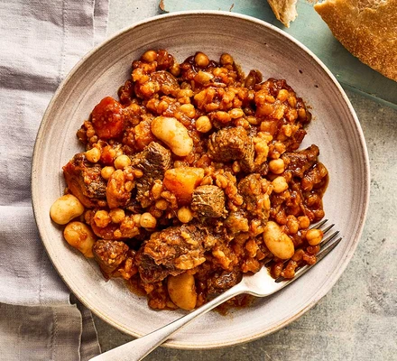

Home
Mom's Cholent

A traditional slow-cooked Jewish stew that's perfect for special occasions.
Ingredients
- 1 cup rice
- 1 cup beans
- 1 cup meat
- 3 onions
- 4 tablespoons of vegetable oil
- 1 cup of barley
- 5 large potatoes, peeled and cut into thirds
- boiling water to cover
- 2 packages of dry onion and mushroom soup mix
Steps
- In a large oven safe pot or roasting pan, saute onions in oil over medium heat.
- Add the rice, beans, and meat to the pot.
- Stir in the barley and potatoes.
- Pour in the boiling water and soup mix.
- Cover and slow cook for eight hours until the stew is tender.